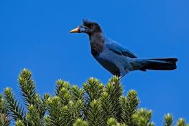

o o parana clube é um clube de futebol brasileiro de cidade de curitiba. o estado do parana,fundado em 19 de dezenbro de 1989 fusão ocorrida entre os clube colorado esporte clube e esporte clube pinheiros ele é conecido carinhosamente como tricolor da vila, em referencia ás 3 cores e alcunha das suas tradicionais, o mascote dele e a galha azul
a trocida do parana é a furia independente do parana faz parte da uniao punho colado, la preto do estado do parana a vila capanema fica a sede da furia la tem a loja a torcida foi fundada em 1993
hoje em dia ele ta jogando na segunda divisão paranaense e passou para joga no poximo ano 2025 na primeira divisao do paranaense. ele genhou do rio branco, o jogo foi fora de casa, o jogo foi foi desputado no penaltes foi de 4x5 sendo assim o parana culbe foi campiao e passando para joga no poximo ano na primeira divisao
